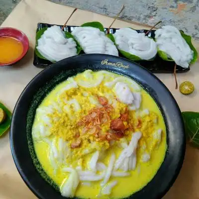
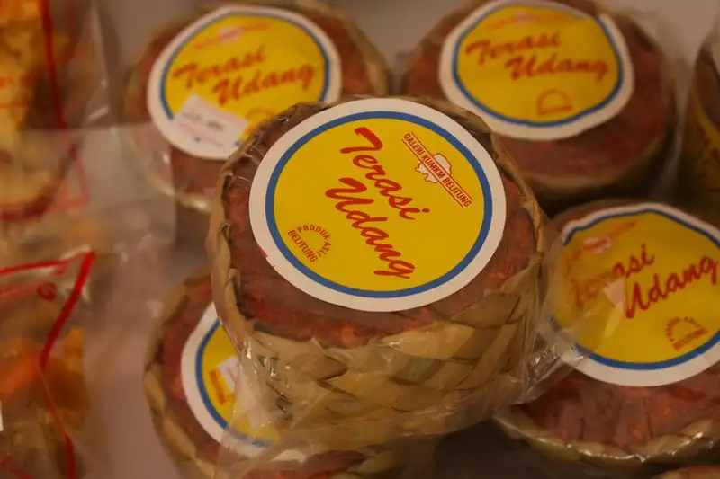
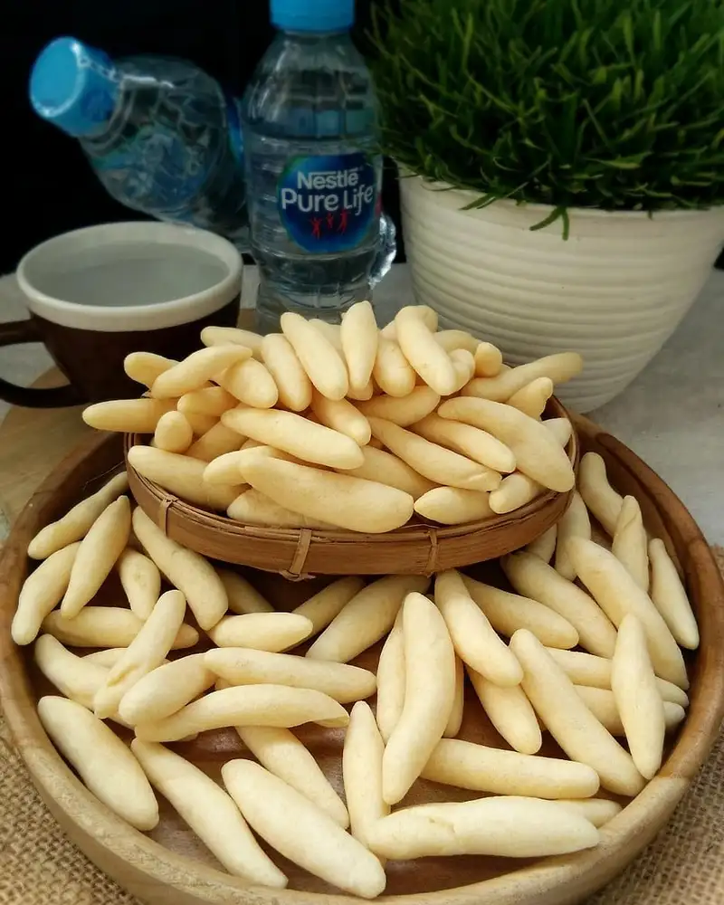
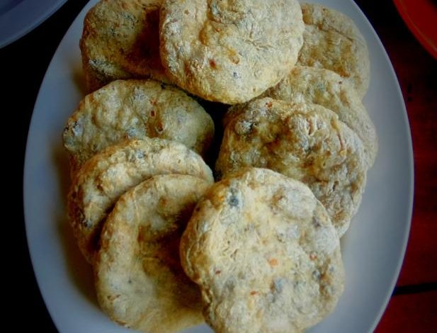

Kuliner Khas Kepulauan Bangka

Lakso
Terbuat dari campuran tepung beras dan sagu, Lakso disajikan dengan kuah ikan bersantan kuning yang gurih dan menggugah selera.

Lempah Kuning
Sup ikan berkuah kuning khas ini menyegarkan dengan tambahan nanas, dikenal sebagai Lempah Nanas oleh masyarakat lokal.

Belacan
Belacan merupakan makanan khas Bangka Belitung yang terbuat dari fermentasi hasil laut. Belacan kerap digunakan sebagai penyedap atau campuran sambal.

Hok Lo Pan
Hok Lo Pan adalah nama lain dari martabak manis atau terang bulan. Hok Lo Pan memiliki banyak variasi topping, seperti gula, wijen, hingga topping modern.

Tai Fu Sui
Tai fu sui adalah minuman yang terbuat dari kacang kedelai. Minuman kedelai khas yang kental, biasa dinikmati pagi atau malam hari sambil bersantai dengan keluarga atau teman.

Sambal Lingkung
Sambal lingkung biasa dijadikan teman makan nasi panas, isian lemper dan roti. Bentuk dan teksturnya seperti abon, namun terbuat dari berbagai ikan.

Bong Li Piang
Kue yang satu ini memiliki tekstur yang lembut seperti bantal dengan rasa yang manis. Terbuat dari tepung terigu, santan, gula aren, dan nanas.

Mi Bangka
Bakmi yang satu ini biasanya disajikan dengan kuah kaldu dari tulang dengan topping daging ayam, daging sapi, serta makanan laut.

Kericu
Makanan bertekstur renyah dengan citarasa gurih ini berbahan dasar adonan telur cumi, sagu, telur ayam, garam dan penyedap.

Lempok Cempedak
Sesuai dengan namanya, lempok atau dodol ini terbuat dari buah cempedak yang memiliki citasa rasa legit dengan tekstur yang kenyal.

Ampiang
Ampiang adalah variasi dari otak-otak, dengan bahan utama kulit ikan tenggiri, biasanya disajikan dengan saus khas Bangka Belitung (cuka).

Es Jeruk Kunci
Es jeruk kunci Belitung adalah minuman yang terbuat dari air jeruk kunci, gula, dan es. Ada juga variasi lain dari es jeruk kunci, yaitu es jeruk hamoi.